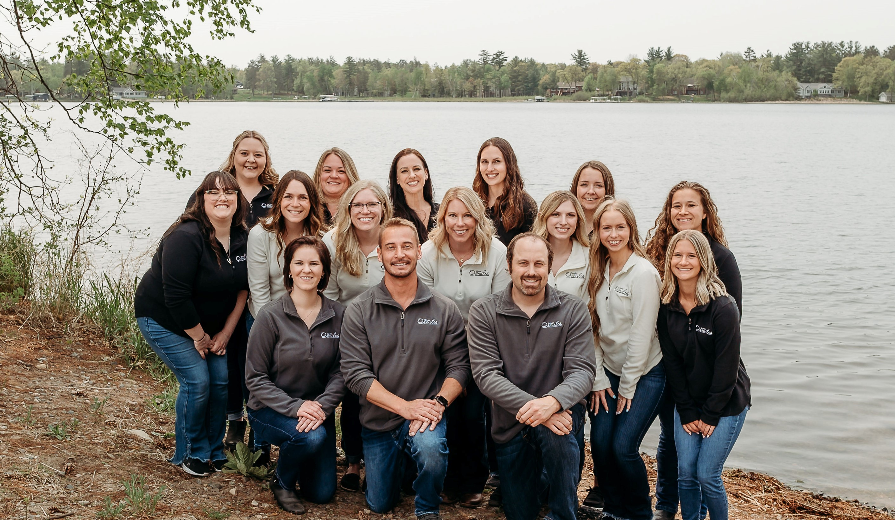
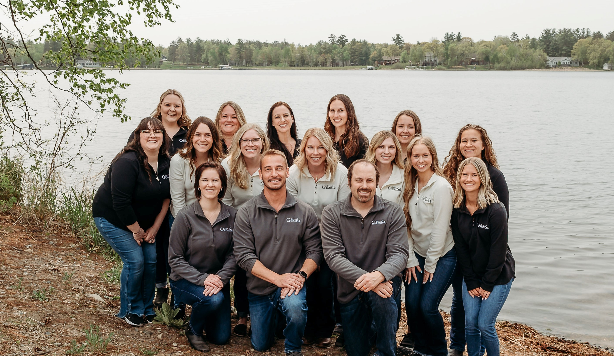
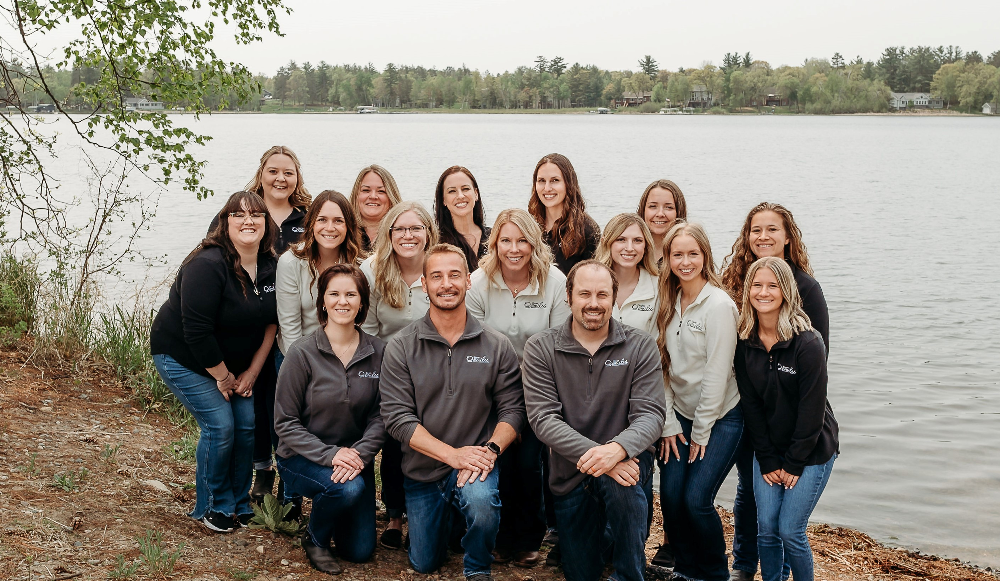
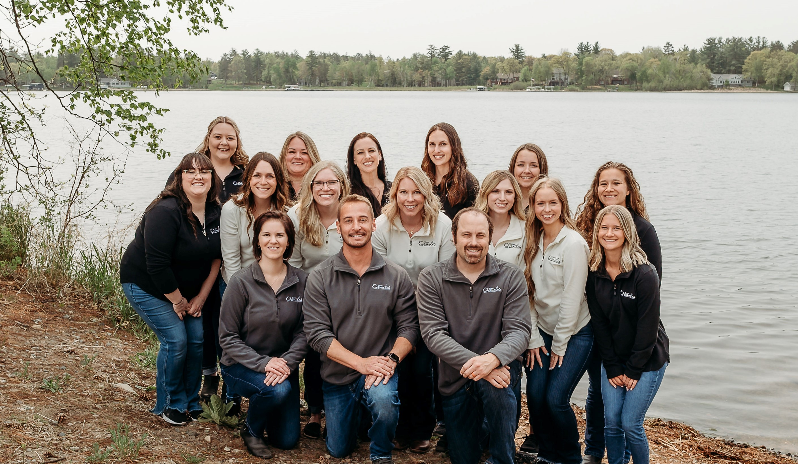

Dr. Waln first graduated from central MN and then the University of Minnesota Dental School. After schooling, he became a US Army dentist in Afghanistan, a Nisswa volunteer firefighter, and a first responder. Dr. Waln's dedication to his country, career, and his community speak for themselves. When it came to opening a dental office, he designed the services to eliminate extra appointments and unessential referrals. At Nisswa Smiles, you will be given the individual attention you need right away. In his free time, Dr. Waln likes to go boating and spend time riding his ATV in the woods near his hunting shack.

Dr. Klabo grew up and graduated from Brainerd, MN. He then graduated from Concordia College with a major in biology and a minor in chemistry. Dr. Klabo received his dental training from the University of Minnesota School of Dentistry and began his dental career in Wausau, Wisconsin. He and his wife Malerie, and two children, Juliette and Calvin, love being back in the area. In Dr. Klabo's free time, he enjoys spending time with his family, golfing, fishing, hunting, and getting up to the cabin. Dr. Klabo loves to build patient relationships. He places great value on the importance of patient education.

Dr. Peterson is a graduate of the University of Minnesota School of Dentistry. Go gophers! She relocated to the Brainerd Lakes area after moving from Minneapolis, MN. Despite joining the office only recently, she has already garnered a deep respect for the dental team who treats every patient with kindness and professional attentiveness. Dr. Peterson is an intermittent artist, off-pitch singer, and passable baker. In her spare time, she is scavenging for takeout and searching for new restaurants to try. Any and all food suggestions welcome.
Jordin joined our team in 2018 after relocating to the Brainerd Lakes area. With four years of oral surgery experience, she is excited to be a part of a general dentistry practice. Her knowledge and experience with the placement of dental implants make her a valuable asset to our team. In her spare time, she loves to travel and spend time at the lake with her husband, Grant, and their dog Greta!
Josey loves caring for our patients, so they always have a relaxed and comfortable environment. For her, the most rewarding thing is to empower patients to take control of their dental care and see them with a confident smile after treatment. Josey enjoys spending time with her husband, Nick, and their cat Charlotte. In her free time, you can find her caring for her chickens or in the kitchen baking or cooking!
Ashlee is our highly skilled full-time hygienist. She graduated from hygiene school in 2012. Ashlee loves having the opportunity to educate and provide high-quality care to our patients. She lives in Pequot Lakes with her husband, three boys, and one daughter. She loves to spend time with family and being outdoors.
Jill is an accomplished dental hygienist who has been with our office since 2016. Her knowledge of oral health and her gentle touch will make you feel at ease at your next cleaning appointment! Jill enjoys building personal relationships with her patients centered around educating and motivating them towards an optimum state of oral health. Jill and family reside in the area. She loves horses, hunting, and fishing.